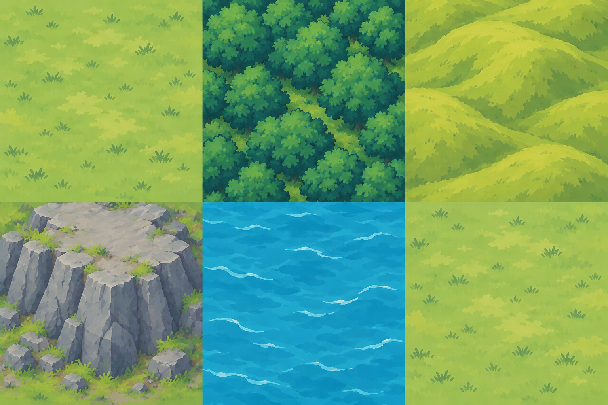

Règles et fonctionnement
Essai des mini-cartes de bataille
Comprendre la génération des plateaux tactiques et leur présentation JRPG.
Comprendre ce que cela implique
Le serveur produit un plateau reproductible de trois colonnes et cinq rangées. La rivière est optionnelle ; les deux joueurs reçoivent la même carte officielle.
Les textures JRPG v2 simplifient seulement la présentation. Les effets des cases restent calculés par le serveur ; les structures utilisent leur propre atlas.
Le piton avec falaise sert de repère visuel au terrain rocheux ; cette illustration ne crée pas de nouvelle règle de hauteur ni de déplacement.

Dans cet article
Détails de référence
Texte de référence mis en forme et conservé dans l’historique de cet article. Les paragraphes datés peuvent décrire une évolution ou une étape antérieure.
Ouvrir /playtest/battlefield-generator.html via le serveur du jeu. « Nouvelle carte » transmet une nouvelle graine au serveur ; « Reproduire » conserve la graine. La vue opposée inverse uniquement la présentation. La fixture /tests/fixtures/tactical-terrain.html permet d'inspecter le plateau réel, avec unités fictives et verrouillage des boutons.
Chaque nouvelle bataille tactique génère duel.tactics.battlefield à partir de config.randomSeed. La carte est incluse dans les vues des deux joueurs et les sauvegardes, et ne change pas au fil des tours. Les combats déjà enregistrés sans carte restent compatibles avec leur affichage précédent.
Le générateur app/js/core/battlefield-generator.js s'exécute dans le moteur serveur. Sa règle actuelle, mixed-battlefield-v2, conserve les dimensions de 3 × 5 cases : deux rangées de départ herbeuses, une rivière dans environ la moitié des cartes, un pont central lorsqu’elle est présente, une approche centrale dégagée et quatre cases latérales de forêt, colline ou roche. Les structures occupent des emplacements distincts.
Chaque case contient terrain, elevation et structure (objet ou null). La génération actuelle active terrainEffectsEnabled: true : les effets et restrictions des cases sont appliqués par le moteur serveur. Consulter les règles de terrain pour leurs valeurs. L’élévation reste une donnée distincte de l’apparence graphique.
Le navigateur affiche la carte officielle via tactical-terrain-renderer.js et l’atlas de terrains JRPG app/assets/map/tileset-v3/terrain.png et les structures de app/assets/map/tileset-v1/structures.png. Il ne génère pas une carte de secours. En cas d'échec de chargement des images, le plateau conserve son apparence précédente.
L'API GET /api/playtest/battlefield?seed=... est un banc d'essai graphique sans mutation de partie. Une graine arbitraire est acceptée pour cette prévisualisation ; les véritables batailles utilisent la graine de leur état serveur.
Les cartes préenregistrées pourront produire le même format. Leur sélection reste à ajouter ; les effets des cases sont déjà disponibles.
Présentation JRPG v2
Depuis le 25 octobre 2026, le dessin des cinq biomes privilégie des aplats en cel-shading et des formes larges. Seuls les assets de terrain changent ; le générateur et les règles serveur ne sont pas modifiés par cette refonte graphique. Les anciennes cartes v1 conservaient une rivière systématique et des effets désactivés ; les règles actuelles des cases sont décrites dans les effets tactiques du terrain.
La variante v3 remplace uniquement la représentation du biome rocheux par un piton avec falaise, sans modifier la génération serveur.